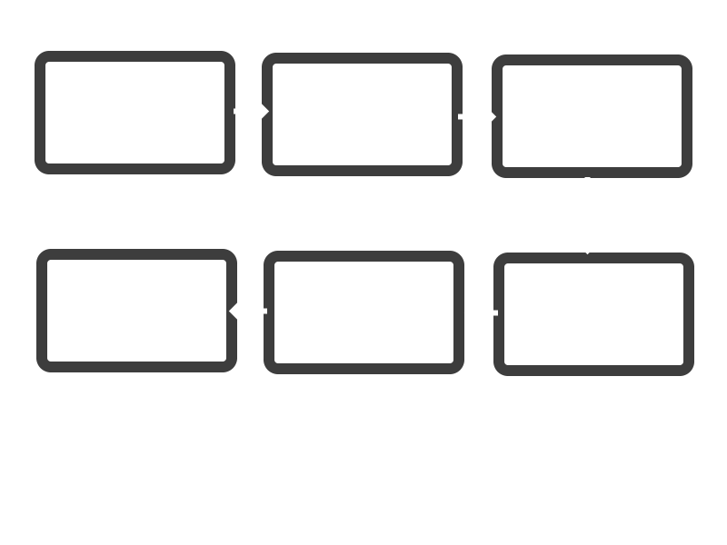
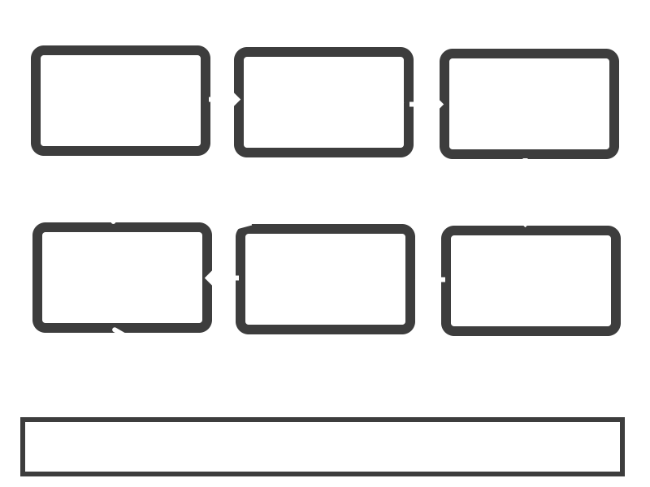

Programmēšana I (10): Kā īstenot risinājumu? (Darbs individuāli)
Saturu ietver
Ievads
Kā Īstenot risinājumu
Soļi
Piemēri
Nobeigums
Īstenošana ietver: apņemšanos meklēt risinājumu. Atbildības uzņemšanās par lēmumu. Identificējiet, kurš ieviesīs risinājumu. Apņemšanās veikt izvēlēto risinājumu.
Īstenošana ir visa darba kulminācija problēmas risināšanā un prasa rūpīgu uzmanību detaļām. Ir iesaistīti trīs pamata posmi: plānošana, sagatavošana un risinājuma ieviešana.
Darbības īstenošanu un uzraudzību. Darbības panākumu pārskatīšana un analīze.
Sekmīgai plāna īstenošanai ir nepieciešamas pārskatatbildības struktūras, skaidra saziņa un progresa izsekošana.
Īstenošana ir visa darba kulminācija problēmas risināšanā un prasa rūpīgu uzmanību detaļām. Ir iesaistīti trīs pamata posmi: plānošana, sagatavošana un risinājuma ieviešana.
Darbības īstenošanu un uzraudzību. Darbības panākumu pārskatīšana un analīze.
Stratēģijas īstenošanas panākumi ir atkarīgi no tā, cik labi jūs identificējat un pārstāvat problēmu. Īstenojot stratēģiju, eksperti problēmu risinātāji biežāk mainīs stratēģijas, apsvērs vairāk risinājumu, rūpīgāk izvērtēs risinājumus, pirms tos atmetīs, un nonāks pie praktiskākiem secinājumiem.
1) Noteikt nepieciešamās darbības.
2) Plānot darbības.
3) Noteikt nepieciešamos resursus.
4) Veikt analalīzi, lai novērstu nelabvēlīgas sekas.
5) Noteikt darbības vadību.
6) Pārskatīt plānu.

Šī saite ir veidots lai parādītu dažus piemērus, kā tas tiek veidots, soli pa solim.
Pirmais solis kas ir svarīgs ir zināt kāds ir mērķis un darbība. Acīmredzams tas ir izveidot saiti.
Otrais solis ir izplānot kā to darbu darīs
Trešais solis ir pirms ķerties pie darbības veikšanu, mums jāzin ar kādu programmēšanas palīdzibu un programmēšanas valodu (programma: Notepad++, visual studio code, brackets, vim un citi) (programmēšanas valoda: HTML, CSS, Javascript, python, SQL, un citi) mēs lietosim, lai uztaisītu šo vietni.
Ceturtais solis ir veikt analīzi un testēšanu ar izveidotu vietni, lai uzzinātu kļudas un sekas.
Piektais solis ir nopietni pārskatīt visu pirms sūtīt skolotājai šo vietni caur github.
Sestais solis ir sūtit darbu skolotājai.

Darbs tiek veikts individuāli izmantojot programmu visual studio code un CSS, HTML, JS programmēšanas valodas.
Darba autors:RihardsV10